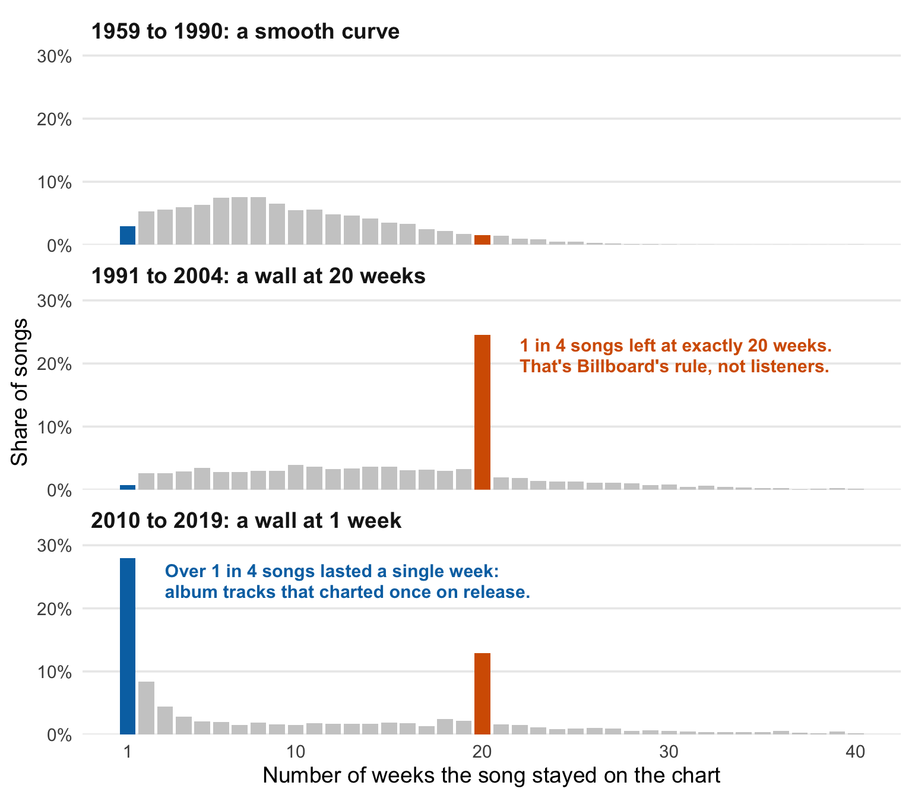

Are hit songs getting more disposable?
Version B: Web explainer
It feels like songs come and go faster than ever. A track blows up on TikTok, everyone streams it for a week, and then it’s gone. The Billboard Hot 100 has ranked America’s most popular songs every week since 1958, so we can check whether that feeling is true.
I looked at 28,122 songs that hit the chart between 1959 and 2019 and asked a simple question: how long did each one stay?
At first glance, yes: songs are vanishing faster
In the 1960s, a typical song spent about 7 weeks on the Hot 100. That number climbed for 40 years, to a high of 20 weeks in 2001. Then it crashed. By 2019, the typical song lasted just 4 weeks.
Hover over the line to see any year.
Case closed? Not quite. Something odd is hiding underneath that line.
But two “walls” in the data weren’t built by listeners
Instead of looking at the typical song, let’s count how many songs lasted exactly 1 week, exactly 2 weeks, and so on. If people simply lose interest at different times, you’d expect a smooth curve. That’s exactly what we see before 1991.
After that, two strange walls appear.

The 20-week wall is a rule. In 1991, Billboard started removing any song that had been on the chart for 20 weeks once it dropped below No. 50, to make room for new music. Songs didn’t stop being popular at week 20. Billboard stopped counting them. This was to make space for new songs as people seemed to get quite attached to songs they liked. But if they weren’t too great (so below top 50), Billboard got rid of them to make space for newer songs to shine.
The one-week wall is about how music is released now. When a big artist drops an album, many of its tracks get streamed enough to chart in the first week, then fall off. Nine in ten of them never make it into the top half of the chart.
So that first chart was measuring Billboard’s rules and album release days as much as what people actually liked.
The biggest hits are lasting longer than ever
Here’s a fairer test. Take only the songs that became real hits by reaching the Top 10, and count how long they stayed in the Top 40. Neither wall touches this: the 20-week rule only removes songs below No. 50, and one-week album tracks almost never reach the Top 10.
Hover over either line to compare years.
The two lines move together for decades, then split apart. The typical song now disappears in a few weeks, but the biggest hits are staying near the top longer than ever: about 10 weeks in the 1960s, 26 weeks by 2019.
So, are hits getting more disposable?
No, but the chart has changed shape. The bottom of the Hot 100 now churns faster than ever, with dozens of songs passing through for a single week. The top has become stickier: the songs everyone really listens to stay there for months.
Whether music looks “disposable” depends on which songs you count and on rules most listeners never hear about.